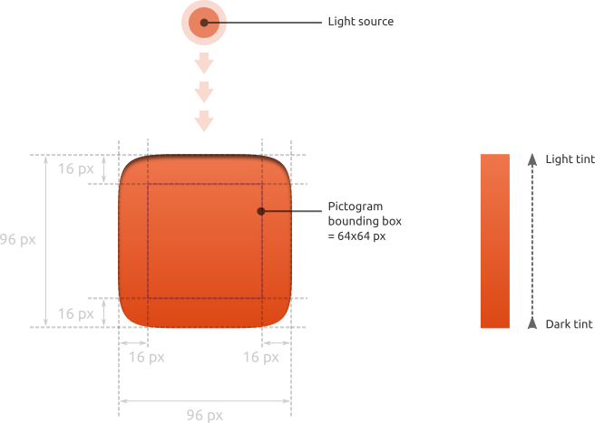
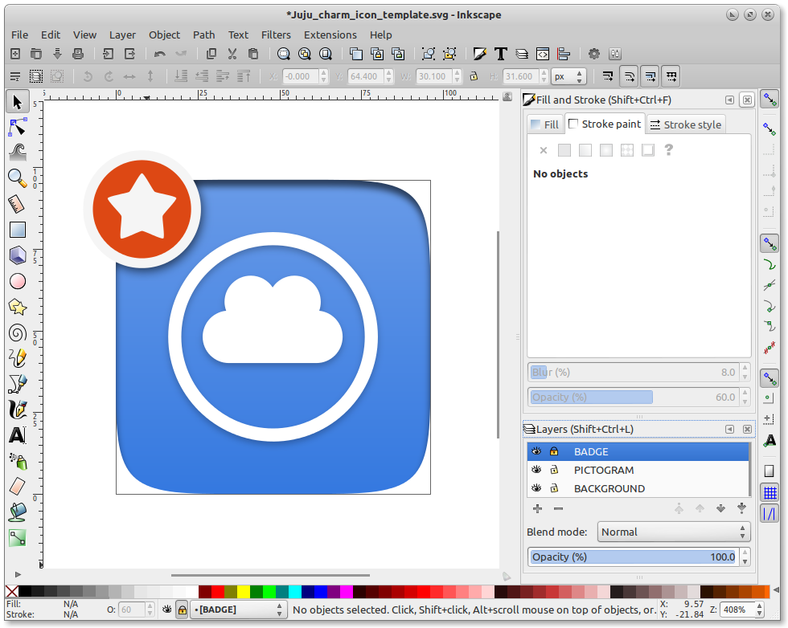

Creating icons for charms
In order to make your charm recogniseable in the Charm Store, it is best practice to add a unique and recogniseable icon for it. This isn't as hard as it may seem, as this step by step guide will demonstrate:
Icon specifications
Before we start actually making the icon though, we should be aware of the specifications required by the charm store. This is to ensure a consistent experience for the users, and icons failing to meet this spec will be rejected.
A charm icon is an SVG format image where the canvas size is 96x96 pixels. It consists of a squircle (a square with rounded corners) which looks ‘embossed’ in the UI. A unique pictogram (usually monochromatic) is displayed in the middle of the squircle.
The squircle can be filled with either a flat color or a vertical gradient. In case of a gradient, the darker colour should correspond to the bottom of the shape, because of the light source located above the icon.
There is no specification to design the pictogram: it can be a white (or black) monochromatic symbol, a colored logo, or whatever is best. However, remember to respect a 16-pixels padding between the edges of the canvas and the pictogram.
If you do not provide an icon for your charm, the icon of the category associated with your charm will be used as placeholder:
Creating an icon
If meeting the above spec seems more complicated than creating your charm in the first place, then fear not, because we have an easy step-by-step guide for you. Before you start you will need:
- A vector graphic editor. We strongly recommend the cross-platform and most excellent Inkscape for all your vector graphic needs.
- The template file, which you can download from this link
- An existing logo you can import, or the ability to draw one in Inkscape
{kind=link}
Once you have those, fire up Inkscape and we can begin!
1Open the template!
From Inkscape load the icon.svg file. Select the Layer called "BACKGROUND", either from the drop down at the bottom, or from the layer dialog.
Add colour
Select Object>Fill and Stroke from the menu to adjust the colour. Apply a flat colour or a gradient, but make sure you edit the gradient file to make it lighter at the top and darker at the bottom.
Show the guides
Choose the "PICTOGRAM" layer, which is where your logo will live. To help you place it properly, choose View>Guides from the menu. A grid will appear showing the limits of the pictogram area.
Draw something
Draw your shape within the bounds determined by the guides. If you already have a vector logo, you can import it and scale it within the guides. Inkscape also has plenty of drawing tools for creating complex images.
If you import a bitmap image to use, be sure to convert it into a vector file and delete the bitmap.
Add a shadow
If you want to apply a drop shadow to your design to make it stand out from the background a bit more, there is a quick filter to help. Choose Filter>Filter Editor from the menu and select "Drop shadow" from the list.
Check it over
You can check what your icon might look like with the reviewed badge by making the "BADGE"layer visible. Make sure you hide it again before saving out the SVG file. Congratulations, your shiny icon is now ready!
And finally... some quick Dos and Don'ts